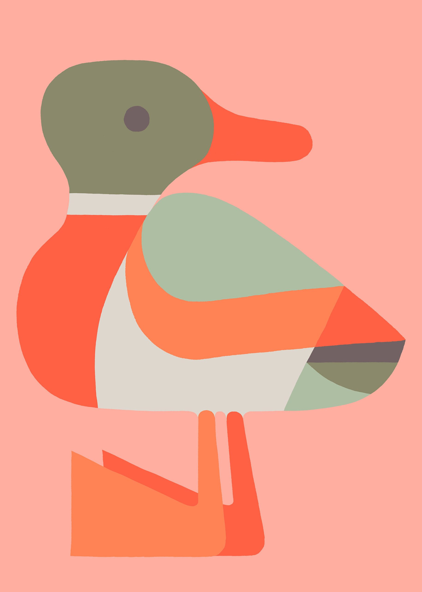

adrian johnson
Over the years, British graphic artist & illustrator Adrian Johnson has developed a unique and strongly identifiable body of work. His trademark economical, highly crafted graphic work constantly evolves while maintaining a healthy distance from current trends and passing fashions. His attention to detail, humor, and simple, timeless sophistication mark him as one of the leading illustrators currently practicing.
In addition to his commercial output, Adrian Johnson has exhibited work in London, Paris, New York, Chicago, Los Angeles, and Tokyo. He has also lectured at numerous universities and art colleges throughout Europe and has been a guest speaker at several global design conferences. He lives and works in Copenhagen, Denmark.


-
